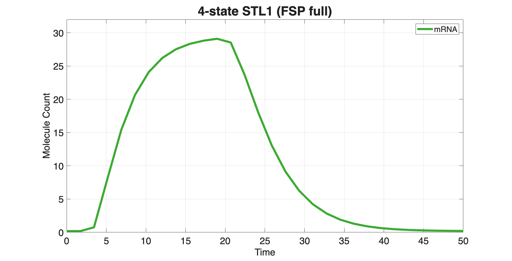
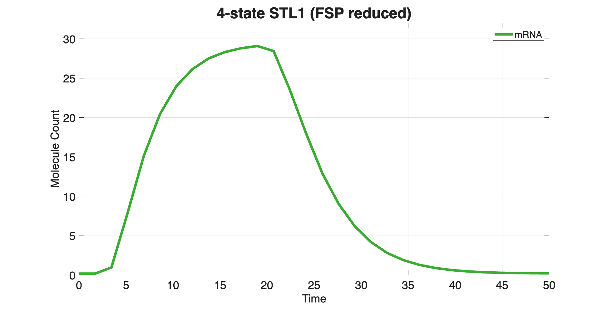

SSIT/Examples/example_SI_ModelReduction
Contents
- Preliminaries:
- Model Reduction
- First, choose a model on which to illustrate the reduction approximation,
- Choose which type of model reduction to apply. Options include:
- Use Proper Orthogonal Decomposition (POD) to create a reduced
- model for computing FSP solutions for the 4-state time-varying
- STL1 yeast model
- 4-state STL1:
- Solve the POD reduced model for STL1:
- Plot the full and reduced FSP solutions:
- Solve the original Model (for comparison)
- Solving the reduced models
- Compare results
Preliminaries:
clear close all addpath(genpath('../src'));
%%%%%%%%%%%%%%%%%%%%%%%%%%%%%%%%%%%%%%%%%%%%%%%%%%%%%%%%%%%%%%%%%%%%%%%%%%%
Model Reduction
* Create reduced FSP models using different types of transformations
%%%%%%%%%%%%%%%%%%%%%%%%%%%%%%%%%%%%%%%%%%%%%%%%%%%%%%%%%%%%%%%%%%%%%%%%%%%
First, choose a model on which to illustrate the reduction approximation,
or you can create your own. Here are the example options defined below: (1) Poisson process (2) Poisson start at steady-state (3) 2-species Poisson process (4) Time-varying bursting gene expression model (DUSP1) (5) Time-varying bursting gene expression (TXTL) (6) Constant 3-Species repressilator model (7) Time-varying 3-species repressilator model (8) Time-varying 4-state STL1 Model
testModel = 8;
%%%%%%%%%%%%%%%%%%%%%%%%%%%%%%%%%%%%%%%%%%%%%%%%%%%%%%%%%%%%%%%%%%%%%%%%%%%
Choose which type of model reduction to apply. Options include:
'Linear State Lumping' (LNSL) -- State space is divided into linearly distributed bins. Then within each bin, the proability distribution is assumed to be constant. The number of bins for each species is defined by reductionOrder. 'Logarithmic State Lumping' (LGSL) -- State space is divided into logarithmically distributed bins. Then within each bin, the proability distribution is assumed to be constant. The number of bins for each species is defined by reductionOrder. 'Principle Orthogonal Decomposition' (POD) - The infintesimal generator is projected onto the orthonorml basis spanned by a previous solution of the full master equation at discrete time points. This is done by perfoming SVD on the solutions and choosing the output space corresponding to the 'redOrder' largest singular values. For best use, this reduction should be found using a fine time resolution in the calculation of the FSP. The size of the reduced model must be specified as 'reductionOrder'. Because the POD requires a solution of the FSP, this reduction is usually only helpful for situations where many solutions are needed (e.g., during model fitting). 'No Transform' - Test case where no reduction is applied. Other Options that are only aplicable to time invariant systems: 'Log Lump QSSA' (LGQSSA) -- Same as LGSL, but where the distribution within each lump is assumed to be distributed according to the quasi-steady state assumption. 'Dynamic Mode Decomposition' (DM) -- (POD2) -- Extension of POD that also includes the time derivatives of the CME (i.e., A*P(t_i)) solution in the set of vectors onto which the CME is projected. Only the vectors corresponding top the top 'reductionOrder' singular values are kept for the projection. 'Eigen Decomposition'(ED) -- The infintesimal generator is projected onto the eigenvectors corresponding to its least negative eigenvalues. The number of eigenvectors for this projection is defined by 'reductionOrder'.
%%%%%%%%%%%%%%%%%%%%%%%%%%%%%%%%%%%%%%%%%%%%%%%%%%%%%%%%%%%%%%%%%%%%%%%%%%% reductionType = 'POD'; % {'Log Lump QSSA', % 'Proper Orthogonal Decomposition','QSSA'}; reductionOrder = 25; qssaSpecies = 2; % only needed for the QSSA reduction scheme podTimeSetSize = 200; % only needed for the POD reduction scheme % Define SSIT Model % SSIT models are defined as usual: switch testModel case 1 % Poisson Process Model1 = SSIT; Model1.species = {'x1'}; Model1.initialCondition = 0; Model1.propensityFunctions = {'kr';'gr*x1'}; Model1.stoichiometry = [1,-1]; Model1.parameters = ({'kr',100;'gr',1}); Model1.fspOptions.initApproxSS = false; Model1.tSpan = linspace(0,3,10); case 2 % Poisson Start at SS Model1 = SSIT; Model1.species = {'x1'}; Model1.initialCondition = [0]; Model1.propensityFunctions = {'kr';'gr*x1'}; Model1.stoichiometry = [1,-1]; Model1.parameters = ({'kr',40;'gr',1}); Model1.fspOptions.initApproxSS = true; Model1.tSpan = linspace(0,5,10); case 3 % 2-Species Poisson Model1 = SSIT; Model1.species = {'x1';'x2'}; Model1.initialCondition = [0;0]; Model1.propensityFunctions = {'kr';'gr*x1';'kp';'gp*x2'}; Model1.stoichiometry = [1,-1,0,0;0,0,1,-1]; Model1.parameters = ({'kr',40;'gr',1;'kp',20;'gp',1}); Model1.fspOptions.initApproxSS = false; Model1.tSpan = linspace(0,5,12); case 4 % Time-varying Model (DUSP1) Model1 = SSIT; Model1.species = {'ActiveGene';'mRNA'}; Model1.initialCondition = [0;0]; Model1.propensityFunctions = {'kon*(1+IGR)*(2-ActiveGene)';'koff*ActiveGene';'kr*ActiveGene';'gr*mRNA'}; Model1.stoichiometry = [1,-1,0,0;0,0,1,-1]; Model1.inputExpressions = {'IGR','a1*exp(-r1*t)*(1-exp(-r2*t))'}; Model1.parameters = ({'koff',0.14;'kon',0.14;'kr',10;'gr',0.01;... 'a1',0.4;'r1',0.04;'r2',0.1}); Model1.fspOptions.initApproxSS = true; Model1.tSpan = linspace(0,180,12); case 5 % Time-varying Bursting TXTL Model Model1 = SSIT(); Model1.species = {'goff','gon','rna','prot'}; Model1.initialCondition = [2;0;0;0]; Model1.propensityFunctions = {'kon*goff*(1+sin(2*pi*t))';'koff*gon';'kr*gon';'gr*rna';'kp*rna';'gp*prot'}; Model1.stoichiometry = [-1,1,0,0,0,0;1,-1,0,0,0,0;0,0,1,-1,0,0;0,0,0,0,1,-1]; Model1.parameters = ({'kon',0.5';'koff',1;'kr',20;'gr',1;'kp',5;'gp',1}); Model1.tSpan = linspace(0,5,16); case 6 % Constant 3-Species Repressilator Model Model1 = SSIT('Repressilator'); Model1.tSpan = linspace(0,20,21); case 7 % Time-varying 3-Species Repressilator Model Model1 = SSIT('Repressilator'); Model1.propensityFunctions{1} = 'kn0*(1+cos(2*pi*t))+kn1*(1/(1+a*(x2^n)))'; Model1.tSpan = linspace(0,20,21); case 8 % Time-varying 4-state STL1 Model
%%%%%%%%%%%%%%%%%%%%%%%%%%%%%%%%%%%%%%%%%%%%%%%%%%%%%%%%%%%%%%%%%%%
Use Proper Orthogonal Decomposition (POD) to create a reduced
model for computing FSP solutions for the 4-state time-varying
STL1 yeast model
%%%%%%%%%%%%%%%%%%%%%%%%%%%%%%%%%%%%%%%%%%%%%%%%%%%%%%%%%%%%%%%%%%% % Use the STL1 model from example_01_CreateSSITModels and % FSP solutions from example_04_SolveSSITModels_FSP % example_01_CreateSSITModels % example_04_SolveSSITModels_FSP % Load pre-computed FSP solutions: load('ExampleSaveFiles/example_4_SolveSSITModels_FSP.mat') % View model summaries: STL1_4state.summarizeModel % Make a copy of the STL1 model to set up for model reduction: STL1_MR_setup = STL1_4state;
Species:
g1; IC = 1; discrete stochastic
g2; IC = 0; discrete stochastic
g3; IC = 0; discrete stochastic
g4; IC = 0; discrete stochastic
mRNA; IC = 0; discrete stochastic
Reactions:
Reaction 1:
s1: 1*g1 --> 1*g2
w1: k12*g1
Reaction 2:
s2: 1*g2 --> 1*g1
w2: (max(0,k21o*(1-k21i*Hog1)))*g2
Reaction 3:
s3: 1*g2 --> 1*g3
w3: k23*g2
Reaction 4:
s4: 1*g3 --> 1*g2
w4: k32*g3
Reaction 5:
s5: 1*g3 --> 1*g4
w5: k34*g3
Reaction 6:
s6: 1*g4 --> 1*g3
w6: k43*g4
Reaction 7:
s7: NULL --> 1*mRNA
w7: kr1*g1
Reaction 8:
s8: NULL --> 1*mRNA
w8: kr2*g2
Reaction 9:
s9: NULL --> 1*mRNA
w9: kr3*g3
Reaction 10:
s10: NULL --> 1*mRNA
w10: kr4*g4
Reaction 11:
s11: 1*mRNA --> NULL
w11: dr*mRNA
Input Signals:
Hog1(t) = A*(((1-(exp(1)^(-r1*(t-t0))))*exp(1)^(-r2*(t-t0)))/(1+((1-(exp(1)^(-r1*(t-t0))))*exp(1)^(-r2*(t-t0)))/M))^n*(t>t0)
Model Parameters:
{'t0' } {[3.1700e+00]}
{'k12' } {[ 78]}
{'k21o'} {[ 192000]}
{'k21i'} {[ 3200]}
{'k23' } {[4.0200e-01]}
{'k34' } {[7.8000e+00]}
{'k32' } {[1.6200e+00]}
{'k43' } {[2.2800e+00]}
{'dr' } {[2.9400e-01]}
{'kr1' } {[4.6800e-02]}
{'kr2' } {[7.2000e-01]}
{'kr3' } {[5.9400e+01]}
{'kr4' } {[3.2400e+00]}
{'r1' } {[4.1400e-03]}
{'r2' } {[4.2600e-01]}
{'A' } {[9.3000e+09]}
{'M' } {[6.4000e-04]}
{'n' } {[3.1000e+00]}
ans =
SSIT with properties:
parameters: {18×2 cell}
species: {5×1 cell}
stoichiometry: [5×11 double]
propensityFunctions: {11×1 cell}
inputExpressions: {1×2 cell}
specialEvents: []
customConstraintFuns: {}
fspOptions: [1×1 struct]
sensOptions: [1×1 struct]
ssaOptions: [1×1 struct]
pdoOptions: [1×1 struct]
fittingOptions: [1×1 struct]
initialCondition: [5×1 double]
initialProbs: 1
initialTime: 0
tSpan: [0 5.0000e-01 1 … ] (1×101 double)
solutionScheme: 'FSP'
odeIntegrator: 'ode23s'
solutionSchemes: {}
modelReductionOptions: [1×1 struct]
dataSet: []
useHybrid: 0
hybridOptions: [1×1 struct]
propensitiesGeneral: {1×11 cell}
propensitiesGeneralODE: []
propensitiesGeneralMean: []
propensitiesGeneralMeanJac: []
propensitiesGeneralMoments: []
propensitiesGeneralMomentsJac: []
propensityFilePrefix: 'STL1_4state'
Solutions: [1×1 struct]
description: {'Add model description here'}
GUIProps: []
fspConstraints: [1×1 struct]
pars_container: [18×1 containers.Map]
4-state STL1:
Set up to solve FSP solution again to time following expansion:
STL1_MR_setup.fspOptions.initApproxSS = true;
STL1_MR_setup.tSpan = linspace(0,50,30);
% Print the computation time to solve the FSP using "tic" and "toc":
tic
STL1_MR_setup = STL1_MR_setup.solve(solver='FSP');
STL1_SolveTime = toc
% Turn off further FSP expansion:
STL1_MR_setup.fspOptions.fspTol = inf;
STL1_SolveTime = 3.3921e-01
Solve the POD reduced model for STL1:
Make a copy of the full model:
STL1_MR = STL1_MR_setup;
% Set the solver to use ModelReduction:
STL1_MR.modelReductionOptions.useModReduction = true;
% FSP expansion should be suppressed when using Model Reductions
% Set type and order of Model Reduction:
STL1_MR.modelReductionOptions.reductionType = reductionType;
STL1_MR.modelReductionOptions.reductionOrder = reductionOrder;
% Call the SSIT to compute the model reduction transformation matrices:
STL1_MR = STL1_MR.computeModelReductionTransformMatrices;
% Solve the reduced model:
tic
STL1_MR = STL1_MR.solve(solver='FSP');
STL1_SolveTimeReduced = toc
STL1_SolveTimeReduced = 3.2856e-01
Plot the full and reduced FSP solutions:
STL1_MR_setup.plotFSP(speciesNames=STL1_MR_setup.species(5),... plotType='means', lineProps={'linewidth',4}, YLim=[0,32],... Title='4-state STL1 (FSP full)', TitleFontSize=24, AxisLabelSize=18,... TickLabelSize=18, XLabel='Time', YLabel='Molecule Count',... LegendFontSize=15, LegendLocation='northeast', Colors=[0.23,0.67,0.2]); STL1_MR.plotFSP(speciesNames=STL1_MR.species(5), plotType='means',... lineProps={'linewidth',4}, XLabel='Time', YLim=[0,32],... YLabel='Molecule Count', Title='4-state STL1 (FSP reduced)',... TitleFontSize=24, AxisLabelSize=18, TickLabelSize=18,... Colors=[0.23,0.67,0.2], LegendFontSize=15, LegendLocation='northeast');


end if testModel<8
Solve the original Model (for comparison)
Solve once to get the necessary FSP projection space.
Model1 = Model1.formPropensitiesGeneral('Model1'); Model1 = Model1.solve(solver='FSP'); % Solve again to record FSP solution time following expansion. tic fspSoln = Model1.solve(solver='FSP',returnType='soln'); fullModelSolveTime = toc % Turn off further FSP expansion. Model1.fspOptions.fspTol = inf; % If using the POD, we will also need to generate basis set using solution % at finer resolution. Note -- this means that the POD will be inefficient % for the initial set up of the reduction. The benefits typically come % from solving the model multiple times with different parameters sets. if strcmp(reductionType,'Proper Orthogonal Decomposition') tSpan = Model1.tSpan; Model1.tSpan = linspace(min(Model1.tSpan),max(Model1.tSpan),podTimeSetSize); fspSoln2 = Model1.solve(returnType='soln'); Model1.tSpan = tSpan; else fspSoln2 = Model1.Solutions; end
Solving the reduced models
Make a copy of the full model.
Model2 = Model1;
% Set the solver to use ModelReduction
Model2.modelReductionOptions.useModReduction = true;
% FSP expansion should be supressed when using Model Reductions
% Set type and order of Model Recution
Model2.modelReductionOptions.reductionType = reductionType;
Model2.modelReductionOptions.reductionOrder = reductionOrder;
Model2.modelReductionOptions.qssaSpecies = qssaSpecies;
% Call SSIT to compute the model reduction transformation matrices.
Model2 = Model2.computeModelReductionTransformMatrices(fspSoln2);
% Solve the reduce model.
tic
fspSolnRed = Model2.solve(returnType='soln');
redModelSolveTime = toc
Compare results
nSpecies = length(Model1.species);
for i = 1:nSpecies
PODfinalError(i) = max(abs(squeeze(cumsum(sum(double(fspSoln2.fsp{end}.p.data),setdiff((1:nSpecies),i)))) - ...
squeeze(cumsum(sum(double(fspSoln.fsp{end}.p.data),setdiff((1:nSpecies),i))))));
disp([Model1.species{i},': KS(Full,Red) = ',num2str(PODfinalError(i))])
end
% Make Figures to compare the results. Here, we will plot the original
% model in blue and the reduced model in red lines.
Model1.makePlot(fspSoln,'meansAndDevs',[],[],1,{'Color',[0,0,1]})
Model2.makePlot(fspSolnRed,'meansAndDevs',[],[],1,{'Color',[1,0,0]})
figure(1);legend('Full','Reduced','Location','southeast')
Model1.makePlot(fspSoln,'marginals',[],[],[2:nSpecies+1],{'Color',[0,0,1]})
Model2.makePlot(fspSolnRed,'marginals',[],[],[2:nSpecies+1],{'Color',[1,0,0]})
figure(2);legend('Full','Reduced','Location','eastoutside')
figure(3);legend('Full','Reduced','Location','eastoutside')
end